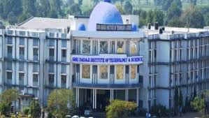

The institute is committed to excel in areas of engineering, technology and management by enhancing its facilities, highly qualified and committed faculty drawn from reputed academic institutions of the country and repute & senior professionals from industry as well the instate benchmark against top engineering college's in India.
Founder Chairman of society, Late Shri Tanwant Singh Keer (Ex. State Minister), has putted his effort to promote quality education along with Shri Rana Sajjan Singh an Agriculturist. The team is structured by Shri Rana Sajjan Singh as Chairman; Smt. Anima Ubeja (Ex. Mayor, Khandwa) as Treasurer.
Infra-structure
The college campus has more than 10 acres of land for its overall development. The main building of college has majestic and attractive look and covers about 1, 20,000 sq ft and of 50,000 sq.mt is in progress. The building is considered to be one of the finest in the area and surrounded by nature creating good environments of study.
? Nearby Airport : Devi Ahilya Bai Holkar Airport , Indore (M.P.) {120 KM away from Khandwa}
? Nearby Railway Station : Khandwa Junction { Bhusawal Division}